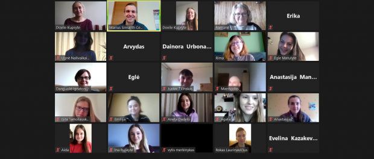
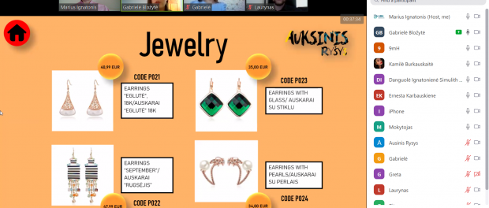
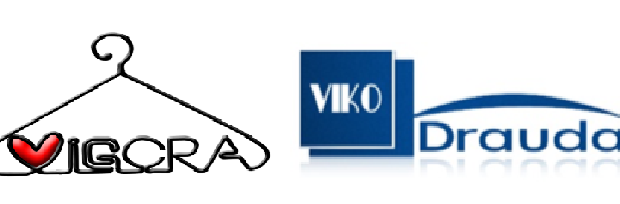
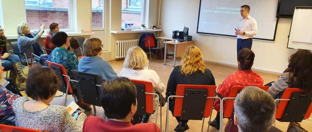
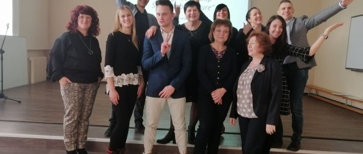
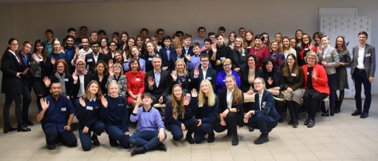
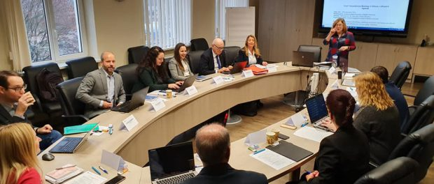
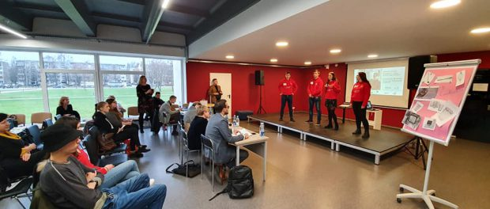
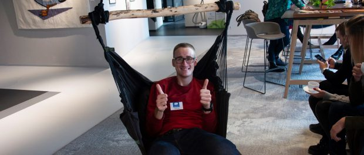

PROTMŪŠIS TARP IMITACINIŲ BENDROVIŲ ATSTOVŲ
2020 m. gegužės 22 d.
Vilniaus kolegijos Verslo vadybos fakulteto imitacinė bendrovė „Vilionė“ ir Vilniaus kolegijos „Simulith“ centras gegužės 22 d. pakvietė į protmūšį tarp imitacinių bendrovių atstovų
PlačiauPIRMOJI NACIONALINĖ NUOTOLINĖ MUGĖ
2020 m. gegužės 22 d.
Kviečiame visas IB dalyvauti pirmojoje nacionalinėje nuotolinių mugių savaitėje.Kiekvieno renginio trukmė: apie 40 min.Naudojama platforma: ZOOM. Nuoroda prisijungimui bus atsiųsta el. paštu užsiregistravusiems
PlačiauPirmoji nacionalinė IB nuotolinių mugių savaitė
2020 m. gegužės 22 d.
2020 m. gegužės 4 – 8 dienomis Lietuvos imitacinių bendrovių tinkle vyko pirmoji nacionalinė nuotolinė prekybos mugė. Tris dienas vadybininkai iš įvairių IB demonstravo savo vadybinius sugebėjimus pristatyti savo naujausius produktų katalogus ir
PlačiauSėkmingos veiklos pavyzdžiai
2020 m. gegužės 22 d.
Netikėtas posūkis IB „Vigora“ veikloje. Kai jau atrodė, kad sustojo viskas, kažkur, širdies gilumoje, supratome, kad visada yra išeitis. Supratome, kad dabartinė situacija, tai tik dar vienas iššūkis. O IB „Vigora“
PlačiauIB vadovų seminaras ir susirinkimas 2020
2020 m. gegužės 22 d.
2020 m. vasario 27-28 d. Vilniaus kolegijos Verslo vadybos fakultetas bei Simulith centras suorganizavo seminarą „Kūrybiškas mąstymas ir kalbėjimas“ įvairių Lietuvos mokyklų imitacinių bendrovių vadovams
PlačiauKonferencija-diskusija
2020 m. gegužės 22 d.
Asociacija „LIBA“ sėkmingai baigia vykdyti Erasmus plius strateginių partnerysčių projektą „Flexible Educational Tool for Leadership Skills Development“ (FETLED). Visus norinčius sužinoti daugiau apie projektą 2020 metų sausio 17 dieną
Plačiau8-OJI TARPTAUTINĖ MOKSLINĖ KONFERENCIJA
2020 m. gegužės 22 d.
8-oji tarptautinė mokslinė studentų konferencija „JAUNIMAS BESIKEIČIANČIOJE VISUOMENĖJE“ jaunuosius mokslininkus sukvietė 2019 metų gruodžio 12 dieną. Jos tikslas – skatinti studentų mokslinę veiklą, kritinį mąstymą, gebėjimą atlikti tyrimus
PlačiauProjekto HEIPNET pirmasis susitikimas
2020 m. gegužės 22 d.
Vilniaus kolegijoje vyko pirmasis tarptautinis KA2 strateginių partnerysčių projekto HEIPNET partnerių susitikimas, kurio metu: pristatytas projektas ir svarbiausios veiklos, nustatė pagrindiniai darbo principai
PlačiauKONKURSAS „DARNUS VERSLAS ŠIANDIEN IR RYTOJ!“
2020 m. gegužės 22 d.
Kauno kolegijoje vyko verslumo iššūkis – darnaus verslo idėjų konkursas „DARNUS VERSLAS ŠIANDIEN IR RYTOJ!“
PlačiauIB verslumo konkursas „Idėjos-Galimybės-Verslumas“
2020 m. gegužės 22 d.
„Light House“ Klaipėdoje vyko 13-tasis Vakarų Lietuvos regiono IB verslumo konkursas „Idėjos-Galimybės-Verslumas“. Renginį sveikinimo žodžiais pradėjo Klaipėdos valstybinės kolegijos direktorė
Plačiau